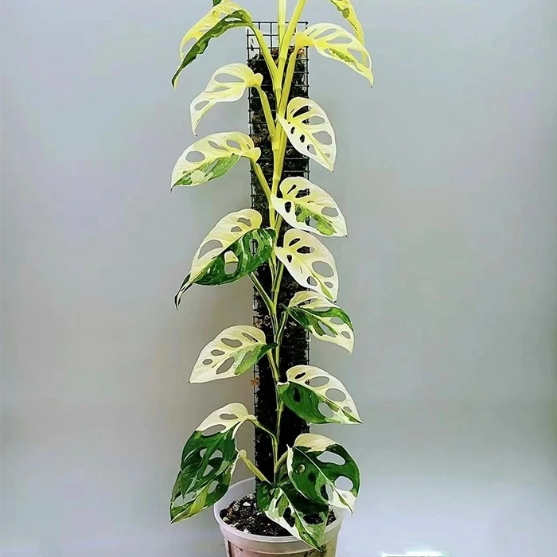
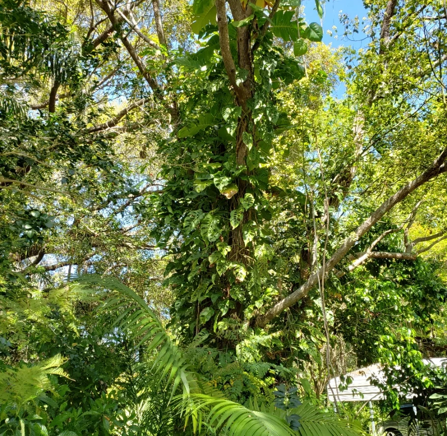
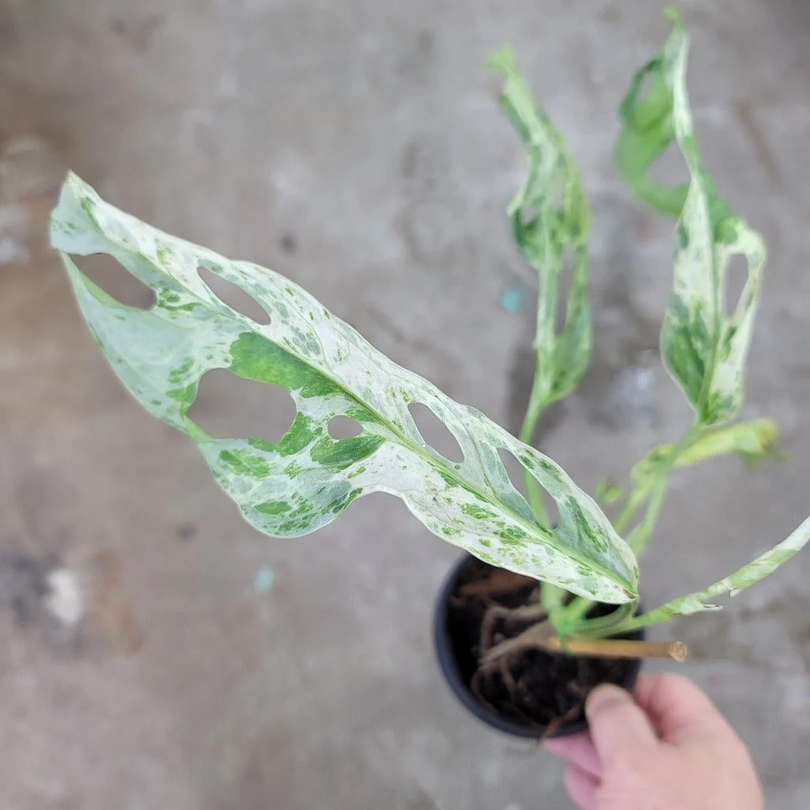
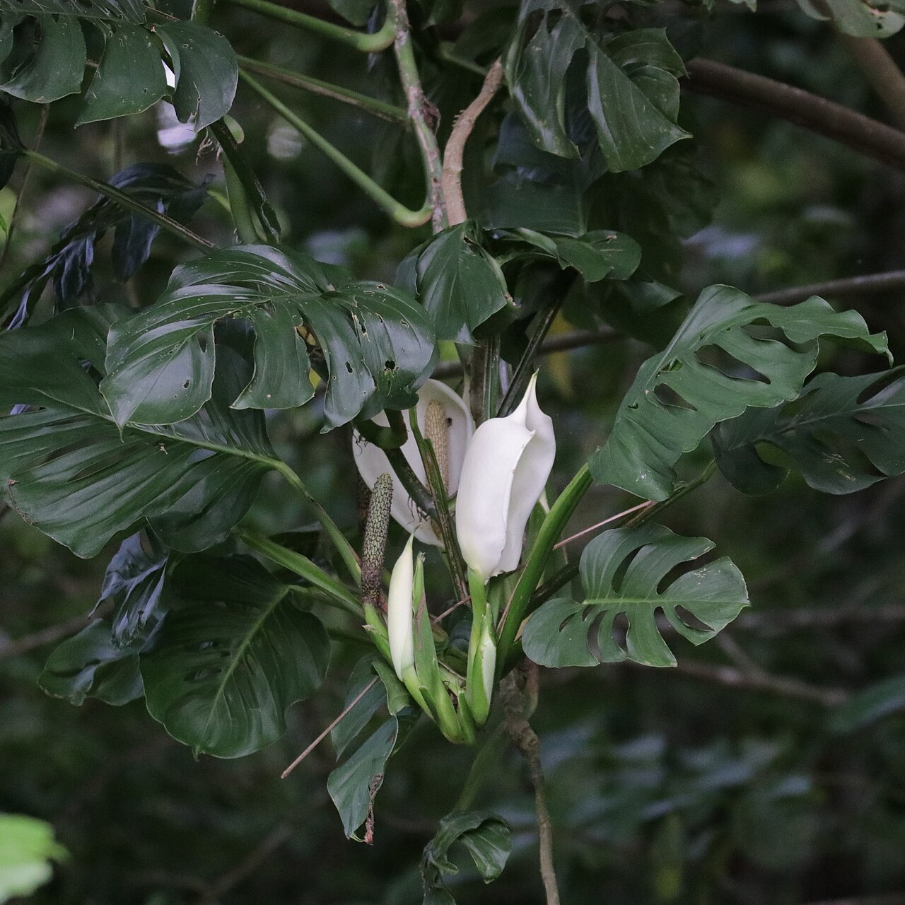

Monstera Adansonii
The Monstera adansonii was my first Monstera plant and it inspired my passion for them. I found a very nice one hanging at an Ace Hardware in downtown Portland and just had to take it home with me. This plant went on to grow vines over 24 feet long that I hung from the ceiling of my living room.
After some research I discovered that these plants come in several variegated versions, all of which are as beautiful as they are rare. Thanks to the rise in popularity of these plants during and after the pandemic, these variants are now a bit more available and slightly more affordable. It is not uncommon for some variegated plants and cuttings to sell for over $100.
The variegated forms are also slower growing overall than the regular, all green versions of the plant, which adds to the scarcity. This is because white leaf areas cannot produce clorophyl to feed the plant the same way the green leaves do. In fact, it's possible to have too much white leaf area on a plant. When this happens, the plant cannot produce enough cloropyl to sustain itself and it can begin to die.


Adansonii Stats
| Native Range | Tropical America |
|---|---|
| Growth Habit | Climbing Hemiepiphyte |
| Growth Rate | Fast |
| Fenestration | Interior Perforations |
| Mature Leaf Size | 10 to 28 in. |
| Time to Mature Foliage | Approx. 2–3 years |
My Adansonii Variants:
- Adansonii Regular Form
- Adansonii Narrow Form
- Adansonii Indonesian Mint
My Adansonii Wishlist:
- Adansonii Japanese Tricolor
- Adansonii Albo
- Adansonii Aurea

Resources
- PeaceLoveHappinessClub - One of my favorite boutique plant shops.
- eBay - A surprising place to find rare plant cuttings
- Serpentine LA - Inspired interior/exterior design using sculpted plants.
Monstera Grove Ambience
Water + tropical forest sounds